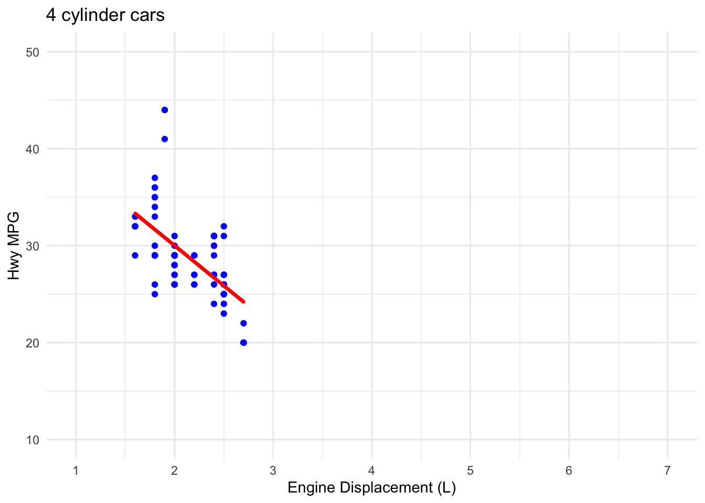
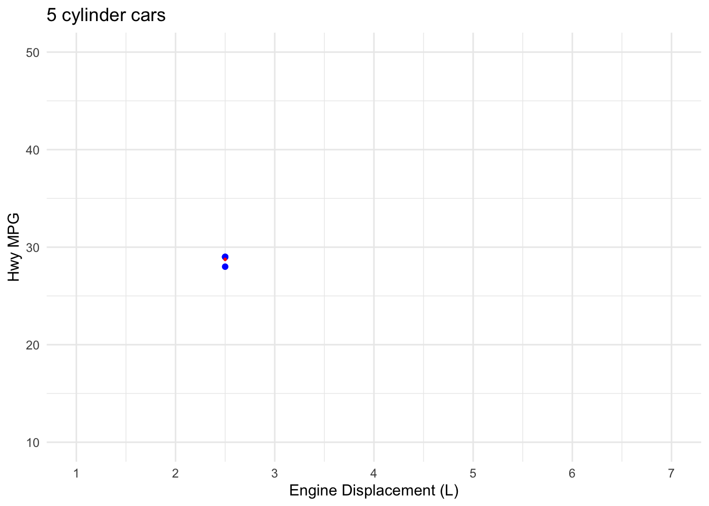
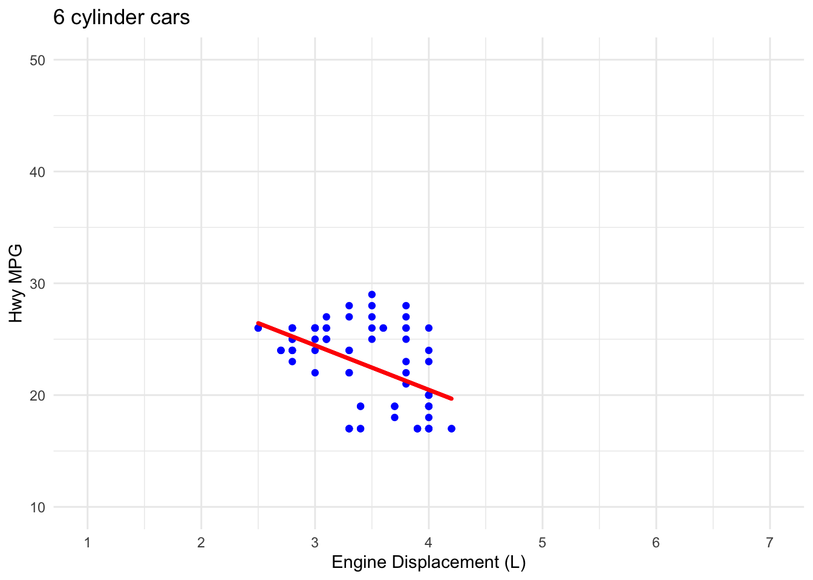
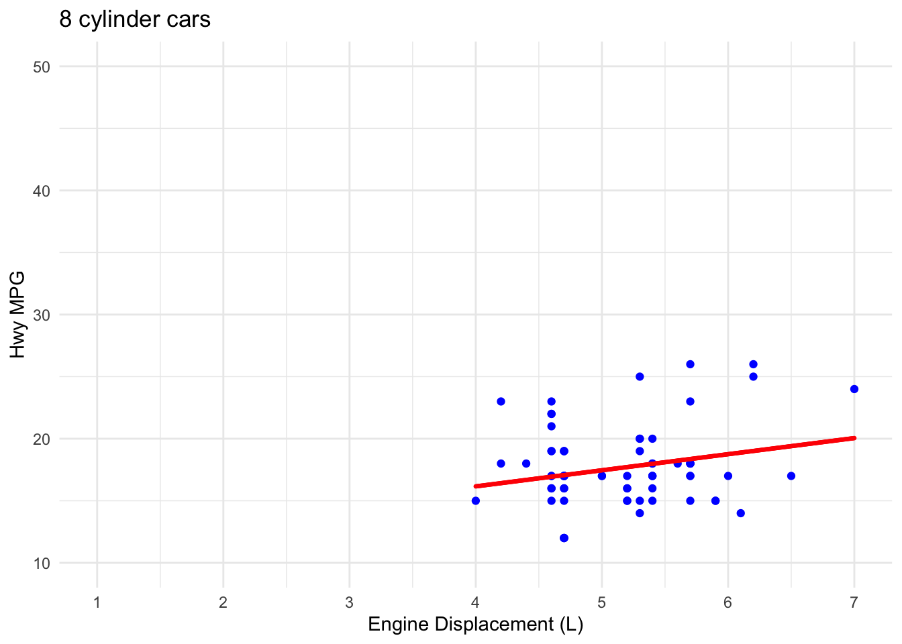

When I first learned about list columns, I thought, “Weird, when will I ever use these?” In the year since, list columns have become my go-to data storage method as soon as I feel like I’m herding cats. That feeling usually arises when my analysis moves from processing typical numeric and text data to iterative programming on more complex data objects like lists, subsets, models, and plots. All of which will fit very nicely within list columns.
In this post I’ll demonstrate the versatility of list columns to hold mulitple types of complex data as well as keep that data aligned so that you can iteratively program using the purrr package.
library(tidyverse)
library(magrittr)
library(modelr)
library(knitr)You’re probably already familiar with character, double, and integer vectors like those found in the mpg tibble below (Note: if you weren’t already familiar with tibbles, they are just a special type of dataframe that has been formatted to handle list columns).
mpg %>% head() # A tibble: 6 × 11
manufacturer model displ year cyl trans drv cty hwy fl class
<chr> <chr> <dbl> <int> <int> <chr> <chr> <int> <int> <chr> <chr>
1 audi a4 1.8 1999 4 auto(l5) f 18 29 p compa…
2 audi a4 1.8 1999 4 manual(m5) f 21 29 p compa…
3 audi a4 2 2008 4 manual(m6) f 20 31 p compa…
4 audi a4 2 2008 4 auto(av) f 21 30 p compa…
5 audi a4 2.8 1999 6 auto(l5) f 16 26 p compa…
6 audi a4 2.8 1999 6 manual(m5) f 18 26 p compa…List columns are another kind of vector. They’re like the suitcase from Incredible Beasts and Where to Find Them: They look small but whole worlds can exist inside. While atomic vectors (e.g., double and character vectors) store individual numeric or text values, list columns can store complex data types like models, functions, plots, or even dataframes within dataframes or tibbles within tibbles. In the example below I use group_by() and nest() to create a list column, which by default will be named data.
ds_mpg <-
mpg %>%
group_by(cyl) %>%
nest() %>%
arrange(cyl)
ds_mpg# A tibble: 4 × 2
# Groups: cyl [4]
cyl data
<int> <list>
1 4 <tibble [81 × 10]>
2 5 <tibble [4 × 10]>
3 6 <tibble [79 × 10]>
4 8 <tibble [70 × 10]>Each element of the list column data contains all the data associated with that cylinder count. Let’s view the first element.
ds_mpg$data[[1]] |> head() # A tibble: 6 × 10
manufacturer model displ year trans drv cty hwy fl class
<chr> <chr> <dbl> <int> <chr> <chr> <int> <int> <chr> <chr>
1 audi a4 1.8 1999 auto(l5) f 18 29 p compact
2 audi a4 1.8 1999 manual(m5) f 21 29 p compact
3 audi a4 2 2008 manual(m6) f 20 31 p compact
4 audi a4 2 2008 auto(av) f 21 30 p compact
5 audi a4 quattro 1.8 1999 manual(m5) 4 18 26 p compact
6 audi a4 quattro 1.8 1999 auto(l5) 4 16 25 p compactAs you can see above the list column elements are entire tibbles, all lined up for iterative processing with for loops or–better still–purrr's map functions. In the next chunks I apply a custom function that fits a linear model to each tibble in the list column, and then saves the model output in yet another list column. This avoids repetition in code and maintains alignment of data, models, and outputs. Not bad.
# Create a custom function for modeling the data
foo_model <- function(data){
lm(hwy ~ displ, data)
}
# iteratively apply that function to each dataframe in the list column called data
ds_mpg %<>%
mutate(model = map(.x = data, .f = foo_model))
ds_mpg |> head() # A tibble: 4 × 3
# Groups: cyl [4]
cyl data model
<int> <list> <list>
1 4 <tibble [81 × 10]> <lm>
2 5 <tibble [4 × 10]> <lm>
3 6 <tibble [79 × 10]> <lm>
4 8 <tibble [70 × 10]> <lm> Now that I have the models saved in their own list column called model I can work iteratively with them as well. What if I want to plot the predicted values of each model? Well I can do so and save the plots in yet another list column.
To plot the model outputs I’ll want to create a data grid of all possible values and then use ggplot() to create a unique plot for each models predictions against its actual data.
# First let's add another list column for the data grids
ds_mpg %<>%
mutate(
grid = map(
.x = data, # the variable you are mapping to ...
.f = data_grid, # ... the function
# next come arguments for the function
displ = seq_range(displ, 500)
)
)
# then let's add predicted values
ds_mpg %<>%
mutate(pred = map2(grid, model, add_predictions, var = "hwy_pred"))
ds_mpg |> head() # A tibble: 4 × 5
# Groups: cyl [4]
cyl data model grid pred
<int> <list> <list> <list> <list>
1 4 <tibble [81 × 10]> <lm> <tibble [500 × 1]> <tibble [500 × 2]>
2 5 <tibble [4 × 10]> <lm> <tibble [1 × 1]> <tibble [1 × 2]>
3 6 <tibble [79 × 10]> <lm> <tibble [500 × 1]> <tibble [500 × 2]>
4 8 <tibble [70 × 10]> <lm> <tibble [500 × 1]> <tibble [500 × 2]>Finally let’s create plots for each cylinder count, add custom titles, and save the results in out last list column plots.
# Create custom plotting function
gg_foo <- function(data_orig = data, data_pred = pred, cyl = cyl){
# generate plot title
plot_title <- paste(cyl, "cylinder cars")
# plot raw data
data_orig %>%
ggplot(aes(x = displ, y = hwy)) +
geom_point(color = "blue") +
# plot model predicted values
geom_point(
data = data_pred,
aes(x = displ, y = hwy_pred),
color = "red",
size = .5
) +
scale_x_continuous(
breaks = seq(1, 7, by = 1),
limits = c(1, 7)
) +
scale_y_continuous(
breaks = seq(10, 50, by = 10),
limits = c(10, 50)
) +
labs(
title = plot_title,
x = "Engine Displacement (L)",
y = "Hwy MPG"
) +
theme_minimal()
}
# Iteratively apply function
ds_mpg %<>%
mutate(
plots =
pmap(
.l = list(
data_orig = data,
data_pred = pred,
cyl = cyl
),
.f = gg_foo
)
)
ds_mpg |> head() # A tibble: 4 × 6
# Groups: cyl [4]
cyl data model grid pred plots
<int> <list> <list> <list> <list> <list>
1 4 <tibble [81 × 10]> <lm> <tibble [500 × 1]> <tibble [500 × 2]> <gg>
2 5 <tibble [4 × 10]> <lm> <tibble [1 × 1]> <tibble [1 × 2]> <gg>
3 6 <tibble [79 × 10]> <lm> <tibble [500 × 1]> <tibble [500 × 2]> <gg>
4 8 <tibble [70 × 10]> <lm> <tibble [500 × 1]> <tibble [500 × 2]> <gg> You can preview the plots just by calling the plots variable:
ds_mpg$plots[[1]]
[[2]]
[[3]]
[[4]]
You can also add file names and save the plots.
name_plots <- function(name = cyl){
str_c("plot_", name, "cyl.png")
}
ds_mpg %<>%
mutate(file_names = map_chr(cyl, name_plots))map2(
ds_mpg$file_names,
ds_mpg$plots,
ggsave,
height = 4,
width = 6
)This approach might seem overkill for a small dataset like mpg, but imagine if you had a larger dataset with dozens or hundreds of groups you wanted to process. In such scenarios, list columns can be an invaluable tool for manipulating and storing complex data objects by herding them into a familiar data structure, the dataframe/tibble.